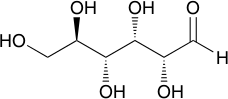

Introduction to Carbohydrates
Carbohydrates, are a class of chemical compouds based on the elements C, H and O. In human nutrition, carbohydrates play a critical part in supplying metabolic energy as well as other physiological benefits that enable the body to perform its regular functions. Food carbohydrates can be classified into two categories according to their digestibility. The first comprises carbohydrates which are digested, absorbed, and metabolized in the upper gastrointestinal tract. These digestible, absorbed and metabolized in the upper gastrointestical tract. These are a wise range of mono-, di-, oligo-, and polysaccharised, e.g., glucose, fructose, lactose, sucrose, maltodextrins, and starch. The second category consists of indigestible carbohydrates which can be partially or completely fermented by bacteria in the large intestine. This group comprises oligosaccharides and complex polysaccharides, such as raffinose, stachyose, β-glucan, arabixylans, inulin (a flexible oligosaccharide), cellulose, pectin, and resistant starch.
Carbohydrates are the building blocks used to provide structural rigidity for living organisms, including the wood found in trees and the shells of lobsters. Even our DNA is assembled from derivatives of carbohydrates, as we will see at the end of this chapter.
The earliest carbohydrates to be isolated and purified were originally considered to be hydrates of carbon. For example, glucose was known to have the molecular formula C6H12O6, which could be rearranged as C6(H2O)6 to indicate six carbon atoms and six water molecules. As the structure of glucose was elucidated, this view was discarded, but the term carbohydrate persisted. Carbohydrates are now understood to be polyhydroxy aldehydes or ketones. For example, consider the structure of naturally occurring glucose. Trees and plants convert carbon dioxide and water into glucose during photosynthesis.
| 6 CO2 | +6 H2O | hν ⟶ |  Glucose | + 6 O2 |
Energy from the sun is absorbed by vegetation and is used to convert CO2 molecules into larger organic compounds. These organic compounds, such as glucose, have C−C and C−H bonds, which are higher in energy than the C=O bonds in CO2. Our bodies utilize a series of chemical reactions to convert these compounds back into CO2, thereby releasing the stored solar energy. In the process, we return carbon dioxide and water back to the environment to be recycled. In essence, our bodies are powered, in large part, by solar energy that has been stored in the form of glucose molecules.
Classification of Monosaccharides
Aldoses vs. Ketoses
Carbohydrates are generally classed as either simple or complex. Simple sugars, or monosaccharides, are carbohydrates like glucose and fructose that can’t be converted into smaller sugars by hydrolysis. Monosaccharides is a term that derives from the Latin word for sugar, saccharum. Complex sugars, such as disaccharides and polysaccharides, are made by joining monosac charides together. Monosaccharides generally contain multiple chiral centers, and Fischer projections are used to indicate the configuration at each chiral center. Glucose and fructose are two examples of simple sugars.
The suffix -ose is used to signify a carbohydrate. Hundreds of different monosaccharides are known, each of which can generally be classified as either an aldose or a ketose. Aldoses contain an aldehyde group, while ketoses contain a ketone group. According to this classification scheme, glucose is an aldose and fructose is a ketose.
Aldoses and ketoses can be further classified based on the number of carbon atoms they contain. This is accomplished by inserting a term (tri-, tetr-, pent-, hex-, or hept-) immediately before the suffix -ose.
(an aldohexose)
(a ketohexose)
(an aldopentose))
D and L Sugars
Glyceraldehyde is one of the smallest compounds considered to be a carbohydrate. It has only one chiral center and therefore can exist as a pair of enantiomers.
[α]D25 = +13.5

[α]D25 = −13.5
As discussed in Section xx, enantiomers rotate plane-polarized light in opposite directions. One enantiomer rotates plane-polarized light in a clockwise fashion (dextrorotatory) and is designated
as (+); the other enantiomer rotates plane-polarized light in a counterclockwise direction (levo rotatory) and is designated as (−). Only (+)-glyceraldehyde is abundant in nature, so glyceraldehyde obtained from natural sources is generally referred to as D-glyceraldehyde. Levorotatory or L-glyceraldehyde can be made in the laboratory, but it is generally not observed in nature.
Early studies with carbohydrates revealed that most naturally occurring carbohydrates can be degraded (broken down) to produce D-glyceraldehyde. For example, degradation of naturally occurring glucose yields D-glyceraldehyde.
During the degradation process, the carbon atoms are removed one at a time (from the top of the Fischer projection). The loss of three carbon atoms from naturally occurring glucose yields D-glyceraldehyde. The same observation is made for other naturally occurring carbohydrates.
In contrast, when synthetic sugars (those prepared in the laboratory) are degraded, they produce a mixture of D- and L-glyceraldehyde. In response to these observations, chemists began using the Fischer–Rosanoff convention in which the letter D designates any sugar that degrades to (+)-glyceraldehyde. In accord with this convention, almost all naturally occurring carbohydrates are D sugars—that is, the chiral center farthest from the carbonyl group will have an OH group pointing to the right in the Fischer projection, as in the following examples:
Even though the R, S system is widely accepted today as a standard for designating configuration, the configuration of carbohydrates as well as those of aminoacids and many other compounds in biochemistry is commonly designated by the D,L system proposed by Emil Fischer in 1891. At that time, it was known that one enantiomer of glyceraldehyde has a specific rotation of +13.5; the other has a specific rotation of −13.5. It was proposed that (+)-glyceraldehude (2,3-dihibroxypropanal) had what we now call the R configuration, there was obviously a 50% change of being correct. At the the time (before the introduction of the R,S system), its chirality centre was assigned the prefix D-, and any compound that could be related to the D-glyceraldehye without disturbing this chirality centre was also labelled a D-compound. Correspondingly, the (-)-enantiomer of glyceraldehyde was assumed to be of what we now call the (S) configuration, and the prefix L- was added to its name. Then if a carbon had the same configuration as that of the central C of the D-gliceraldehyde, it too was labelled a D compound. It subsequently turned out that the chirality centre of (+)-glyceraldehyde does indeed have the (R) configuration and, throuhg this good fortune, structural assignments based on the above-mentioned assumption are correct.
Fischer could have been wrong, but by a stroke of good fortune, he was correct, as proven in 1952 by a special application of X-ray crystallography. D- and L-glyceraldehyde serve as reference points for the assignment of relative configuration to all other aldoses and ketoses. The reference point is the chiral center farthest from the carbonyl group. Because this chiral center is always the next to the last carbon on the chain, it is called the penultimate carbon. A D-monosaccharide has the same configuration at its penultimate carbon as D-glyceraldehyde (its -OH is on the right when written as a Fischer projection); an L-monosaccharide has the same configuration at its penultimate carbon as L-glyceraldehyde (its −OH is on the left). Note that for monosaccharides with two or more chiral centers, the designations D or L refer only to the configuration of the highest-numbered chiral center, that is, the chiral center farthest from the aldehyde or ketone carbonyl group.
Also, note that the D or L designation of a given monosaccharide does not specify the sign of the specific rotation of the compound. L sugars are not necessarily levorota tory, but rather an L sugar is simply the enantiomer of the corresponding D sugar. If the sign of the rotation of plane polarized light is to be specified in a name, it is indicated by a + (plus) or a − (minus) sign preceding the name. Thus, D-glucose, which is dextrorotatory, is designated D(+)glucose, and D-Fructose, which is levorotatory, is designated D(-)fructose. Table 25.1 shows names and Fischer projections for all D-aldotetroses, pentoses, and hexoses. Each name consists of three parts. The letter d specifies the configuration of the penultimate carbon. Prefixes such as rib-, arabin-, and gluc- specify the configuration of all other chiral centers in the monosaccharide. The suffix -ose shows that the compound is a carbohydrate. The three most abundant hexoses in the biological world are D-glucose, D-galactose, and D-fructose. The first two are D-aldohexoses; the third is a D-2-ketohexose. Glucose, by far the most common hexose, is also known as dextrose because it is dextrorotatory. Other names for this monosaccharide are grape sugar and blood sugar. Human blood normally contains 65–110 mg of glucose/100 mL of blood. Glucose is synthesized by chlorophyll-containing plants using sunlight as a source of energy. In the process called photosynthesis, plants convert carbon dioxide from the air and water from the soil to glucose and oxygen. D-Fructose is found combined with D-glucose in the disaccharide sucrose (table sugar, Section 25.4A). D-Galactose is obtained with D-glucose in the disaccharide lactose (milk sugar, Section 25.4B). D-Ribose and 2-deoxy-D-ribose, the most abundant pentoses in the biological world, are essential building blocks of nucleic acids; D-ribose in ribonucleic acids (RNA) and 2-deoxy-D-ribose in deoxyribonucleic acids (DNA).
In contrast, naturally occuring α-amino acids relate to L-(-)-glyceraldehyde since the NH2 group is on the left in their Fischer projections. The alkyl (R) groups of most α-amino acids are of lower priority than CO2H accordining to the Cahn-Ingold-Prelog sequence rules; consequently, with the exception of L-cysteine (for which R=CH2SH), L-α-amino acids are of S configuration.